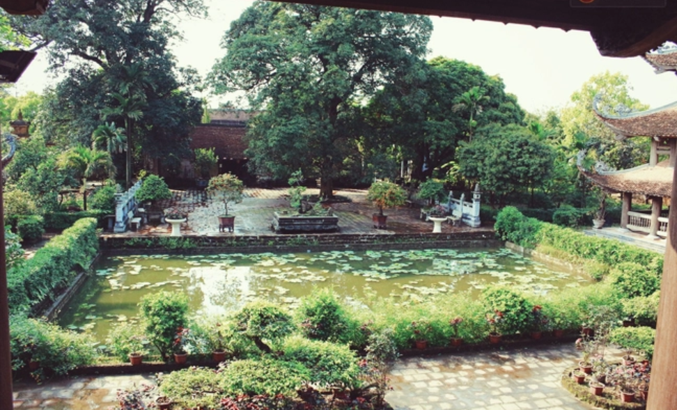
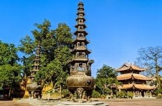

Kiến trúc của chùa Nôm vô cùng đặc biệt được thiết kế một cách tinh tế, độc đáo, mang đến nhiều nét cổ kính đậm chất phong cách ngôi chùa Việt Nam. Một số các công trình kiến trúc nổi tiếng tại chùa Nôm như: Vườn Tháp, lầu Quan Âm đều được làm công phu, tỉ mỉ, mỗi chi tiết được khắc lên đều mang đến ý nghĩa.
Ngôi chùa xây dựng một cách vững chãi kiên cố, với ý nghĩa mang đến lòng tin cho người dân hướng vào một vị thần mà họ đã tôn thờ rất lâu. Chùa Nôm phần mái được thiết kế uốn cong lên, bên trên là một lớp sơn màu trầm gỗ, đẹp mắt. Trên mái là những họa tiết được điêu khắc cẩn thận khắc họa cầu kì, bắt mắt, những đường nét uốn lượn nhẹ nhàng.
Đặc biệt điểm nhấn chính là kiến trúc độc đáo của chiếc mái đỉnh chóp, khi dử dụng tạo hình rồng xung quanh cảm giác mới lạ. Vẻ đẹp này đã tôn vinh nên được vẻ đẹp cổ kính, nét đặc sắc của ngôi chùa tại Việt Nam. Chùa Nôm được xây dựng thêm lầu chuông và lầu trống được xây dựng ngay phía sau cổng chùa, đã tô thêm vẻ đẹp thanh tịnh tại ngôi chùa.
Khi bước vào chùa Nôm thì cảnh quan xung quanh ngôi chùa cũng là điểm nhấn khiến nhiều du khách muốn quay lại, một số cảnh quan thiên nhiên như:
Du khách có thể đi bộ qua những con đường mòn được lát đá sạch sẽ uốn lượn quanh co trong khuôn viên chùa. Mỗi bước chân đi chân đá bạn sẽ cảm nhận được vẻ đẹp xung quanh mà con người đã tạo nên. Ao sen rộng lớn mỗi khi đến mùa sen nở nơi đây mang đến một hương thơm ngào ngạt, nhẹ nhàng. Hoa sen không chỉ là biểu tượng cho sự tinh khiết mà còn mang đến sự thanh tịnh, yên bình trong tâm hồn.
Ao sen rộng lớn là một trong những điểm nhấn nổi bật của Chùa Nôm. Vào mùa hè, những đóa sen khoe sắc, tỏa hương thơm ngát khắp không gian. Khu vực xung quanh ao được bao phủ bởi những thảm cỏ xanh mát và cây cối tươi tốt, tạo nên một không gian yên tĩnh, thư giãn lý tưởng cho các phật tử và du khách.
Di chuyển xung quanh ao sen sẽ là những cây cổ thụ bóng mát đang đung đưa trong gió, cao lớn, thân cây xoắn ốc và tán lá bao trùm nơi lý tưởng để bạn chữa lành tâm hồn.
Khu vườn cổ thụ của Chùa Nôm bao gồm những cây gỗ lớn, tán lá rộng, được trồng từ hàng trăm năm trước. Những cây này tạo bóng mát cho khuôn viên chùa, mang lại cảm giác bình yên và kết nối với thiên nhiên. Đây là nơi lý tưởng để tĩnh tâm và hòa mình vào không gian thiên nhiên trong lành.
Khu vườn cổ thụ tại chùa Nôm cũng góp phần làm cho không gian ở đây thoáng mát hơn. Khu vườn không chỉ là nơi để ngắm cảnh mà còn là nơi dành cho những ai thích check in ghi lại khoảnh khắc. Mỗi khi nắng lên ánh sáng bắ đầu len lỏi qua những tán lá tạo nên hiệu ứng tuyệt đẹp có một không hai.
Chùa Nôm có không gian thoáng đãng, phù hợp cho các hoạt động thiền định và thư giãn. Các khu vực xung quanh chùa, như sân vườn và góc tĩnh tâm, tạo ra không gian lý tưởng để phật tử và du khách có thể tìm lại sự bình an trong tâm hồn. Đặc biệt, nơi này cũng thường xuyên tổ chức các buổi lễ thiền và tụng kinh.
Khu vực thiện định còn được thiết kế các tượng Phật và hoa văn điêu luyện, tinh tế tạo nên một khoang gian tuyệt vời hơn bao giờ hết. Việc thiền điện này giúp bạn thoải mái cải thiện sức khỏe và tinh thần. Dành thời gian cho nơi đây sẽ giúp bạn tái tạo năng lượng đặt biệt cho các hoạt động tham quan.